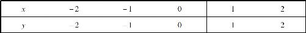
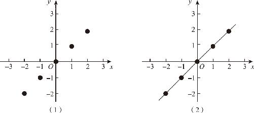
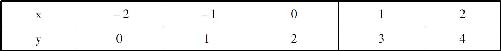
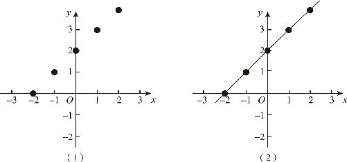
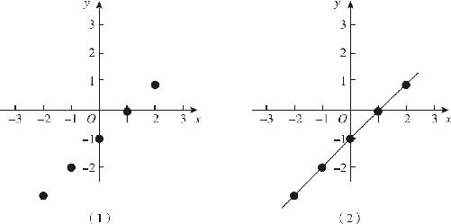
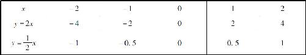
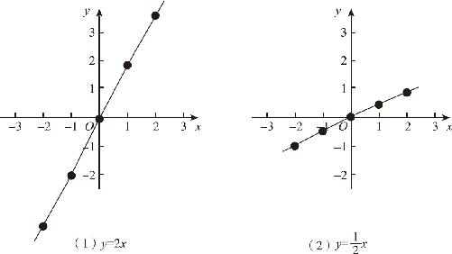
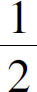
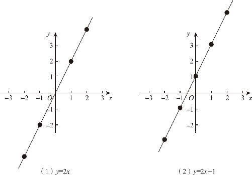

函数是什么呢？函数就是加减乘除的组合．怎么样？这个答案是否出乎你的意料呢？函数怎么可能是加减乘除呢？别忘了加减乘除是世间万物的普遍规律．除了点、线、面以外，难道就没有别的方式来表示加减乘除了吗？现在答案终于出来了，这个答案就是函数！接下来我们就通过直角坐标系来感受一下函数的概念．
在解释加减乘除之前，先说一说最简单的等号，等号即是最简单的数学运算符号，又是最简单的函数运算形式．等号背后的逻辑非常简单，因变量y 直接等于自变量x ，比如穿过圆心的线段长度等于圆的直径．如何把y ＝x 这个函数画在坐标轴上呢？首先，画出一个空的坐标系，在确定了原点和单位长以后，在横、竖两个坐标轴上标记出刻度；然后，从原点开始，分别向左、右两端描点，因为y ＝x ，所以当x ＝0的时候，y 也等于0，那么，当x 等于其他数值时，y 的情况如何呢？为了清楚地描述它们的对应关系，可以在一个表格上把这些数据整理出来，当x 分别等于1，2和－1，－2时，y 对应的数值如表12－1所示．
表12－1

我们把这些坐标数据逐一描绘到坐标系上，最后再通过平滑的方式把他们连接起来．当我们把这些点连接起来以后就会发现，这是一条从左下角经过原点穿向右上角的斜线，这条斜线和x 轴、y 轴的夹角都是45°，经过这条斜线的切分，整个平面直角坐标系被均匀地平分成了两个部分．在这条直线上，我们可以发现：y 随着x 的增大而增大，随着x 的减小而减小．（如图12－4所示）每当我们指定一个x 的数值，就可以得到一个唯一确定的y 值，所以这两者之间符合函数关系．

图12－4
说完了等号，接下来就该说加法了．加什么呢？y ＝x 加上一个数字．就以y ＝x ＋2为例研究一下这个问题，还是要重画坐标轴，重新描点连线．这个函数的坐标数字和函数图象如表12－2所示．
表12－2

我们不难发现，和上一个图象比，这条斜线沿着y 轴往上移动了2个单位长．它仍然是一条沿着45°方向倾斜的直线，只不过原来y ＝x 的直线是经过原点的，现在这条直线沿着y 轴往上移动了2个单位长，它经过的y 轴上的点坐标为（0，2），同时因为向上移动了，导致它在往左下角延伸的时候，也扫过了x 轴上的（－2，0）这个点．（如图12－5所示）当然，要研究函数变化的规律，仅仅画出一条直线是远远不够的，如果你多画几条类似的函数图象，就会发现，y 等于x 加上几，这条直线就会沿着y 轴相应地移动几个单位长．

图12－5
按照同样的办法，我们尝试减法的规律：比如y ＝x －1，如果把这条函数图象作出来就会发现，它仍然是一条直线，只不过沿着y 轴下移了1个单位长，x 减去一个数字相当于加上一个负数．（如图12－6所示）这个现象背后的道理非常简单，我们不做详细描述．

图12－6
讨论完了加减法，再看看乘除法．首先尝试一下作出y ＝2x 的图象，过程仍然是先整理坐标数据再描点．描点后连线就会发现，得到的仍然是一条直线，它与y ＝x 的唯一区别在于，这条直线更靠近y 轴了，它和x 轴的夹角更大了．同样，如果我们把y ＝x ／2的函数图象画出来就会发现，这条线比y ＝x 的曲线更加远离y 轴了，它和x 轴的夹角更小了．（坐标数据整理如表12－3所示；图象见图12－7）
表12－3


图12－7
为什么会产生这样的效果呢？那是因为，和y ＝x 相比，y 的变化率发生了变化．什么叫变化率呢？就是说x 每增大1，y 相应地增加多少，在函数y ＝x 中，x 每增大1，y 也随之增大1，所以它的函数图象就是稳稳的45°线．而在函数y ＝2x 中，x 每增加1，y 却增大2，于是这条直线看起来就更加陡峭了．相反，在y ＝

x 的图象中，x 增大1个，y 只增大0.5，因此直线的倾斜程度就要平缓得多．y 的变化率直接决定了直线的倾斜度，因此y 的变化率也叫斜率．而表示这一斜率的正是x 的系数．这就是乘除函数产生的效果．研究完了基本的函数图象特征以后，还可以进一步研究组合函数的特征．如果把y ＝2x ＋1的图象与y ＝2x 的图象相比就会发现，两者的区别同样仅仅是沿着y 轴移动了1个单位长而已．（如图12－8所示）

图12－8
因此我们可以认为，函数图象加减乘除的效应不但是独立存在的，而且是可以相互叠加的．无论函数图象的形状多么复杂，只要我们发现两个函数图象形状相同，只是上下的位置不同，我们就应该知道，两个函数之间存在着加减的关系．关于这部分内容，后面我们还会做更详细的介绍，这里只是通过这些实例初步感受一下函数图象的变化规律．函数其实并不神秘，它只是结合了代数表达式和几何图形的优势，让我们用更加直观的方式来管理变化着的数据，如此而已．
最后，我们仍然要解释一下函数的意义：既然函数就是加减乘除，那么，我们为什么还要发明函数这个概念呢？因为世界上最基本的运算关系就是加减乘除乘方开方，而在实际生活中，两个变量之间的运算关系却是复杂多样的．在这种情况下，我们不可能为每一种运算方式发明一种新的运算符号．以y ＝2x ＋3为例，x 和y 两个变量的关系中既有乘法又有加法，难道我们还能因此发明一个“乘加”运算符吗？不能，我们只能把天下所有的运算关系都归集到一起，为它们起一个统一的名字叫作函数．因此，我们也可以概括地说：函数只不过是运算关系的统称．
我们还可以把函数再做一个形象的类比，在现代化的工厂中，有很多全自动的智能装备，当我们把水果扔进一个饮料生产线以后，打包好的果汁就自动生产出来了；当我们把奶油扔进冷饮生产线以后，冰激凌就自动生产出来了．因此，我们也可以认为，函数就是一种自动处理数据的设备，我们只要把待处理的自变量扔进去，因变量的结果就会自动生成．在自动化工厂中，我们不用了解自动机械的原理，就可以使用它制作各类产品；同样，当我们使用函数的时候，也完全可以在不了解函数细节的情况下，用它解决实际问题．